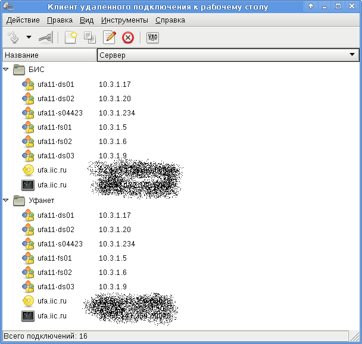
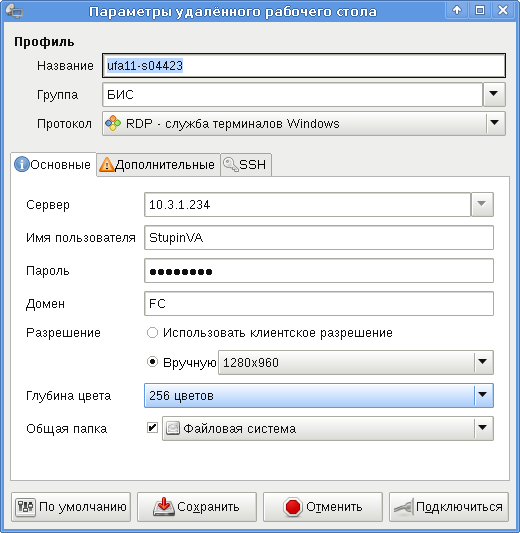
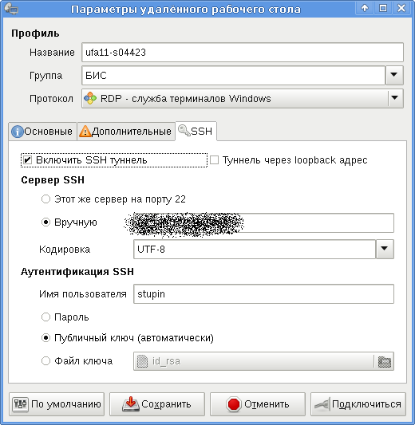
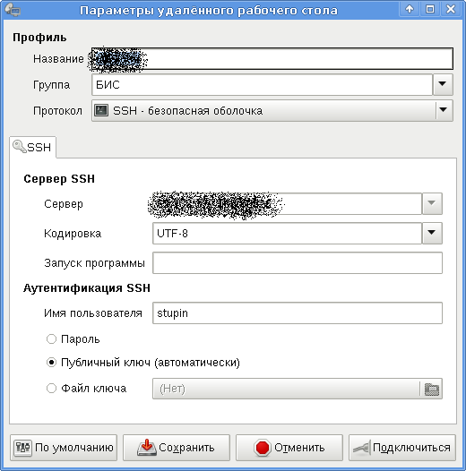
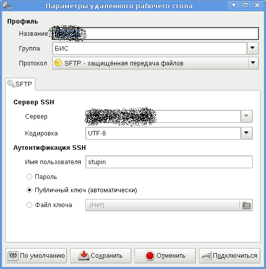
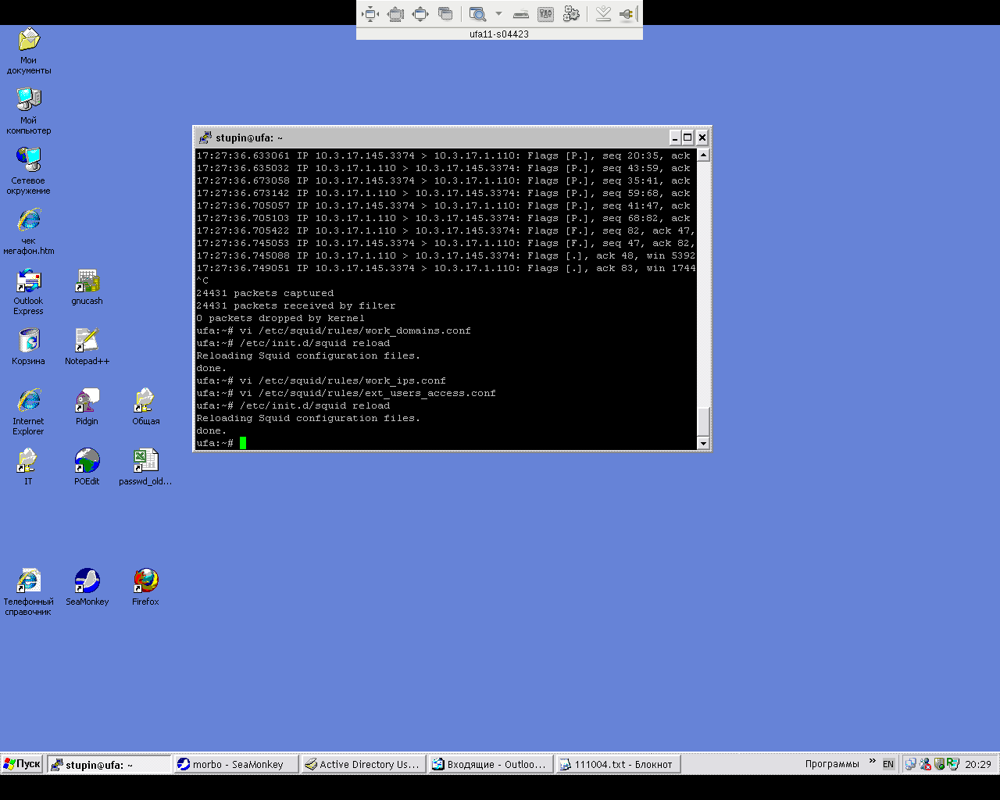

Сегодня вновь посмотрел на программу Remmina и на этот раз она мне понравилась, т.к. я нашёл в ней функцию подключения по протоколу RDP через SSH-туннель, а также нашёл удобный апплет для XFCE.
Сама Remmina в Debian находится в пакете remmina и по умолчанию поддерживает только протоколы SSH и SFTP. Плагин для подключения по RDP находится в пакете remmina-rdp, а апплет находится в пакете remmina-xfce.
Для начала поставим всё это хозяйство:
# apt-get install remmina remmina-rdp remmina-xfce
Разобраться в настройках легко, я просто покажу как она выглядит.
Главное окно Remmina:
Окно настройки RDP:
 Окно настройки SSH:
Окно настройки SFTP:
Кусочек экрана с апплетом для XFCE:

Удалённый рабочий стол, открытый по протоколу RDP с помощью Remmina:
Теперь подключаться к удалённым компьютерам стало значительно удобнее!